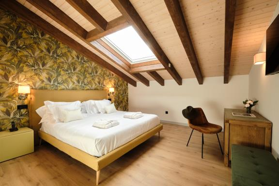
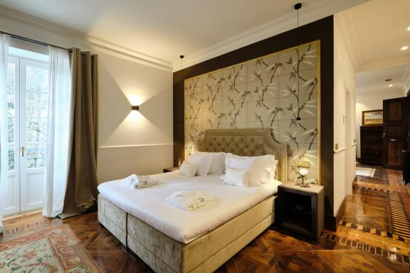
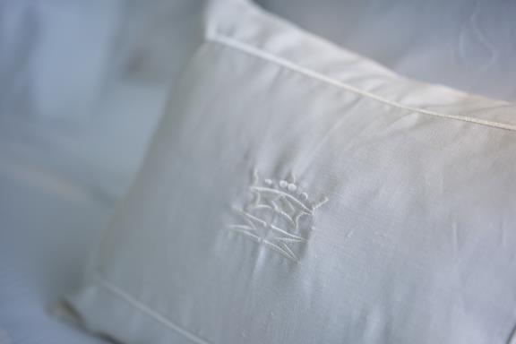
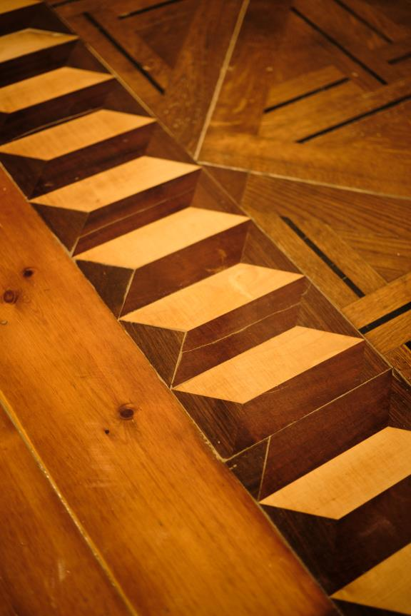
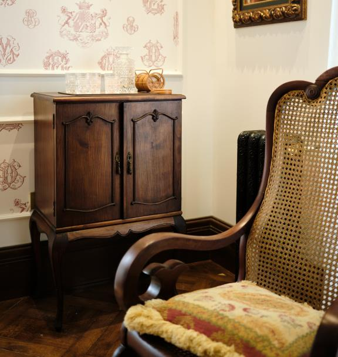
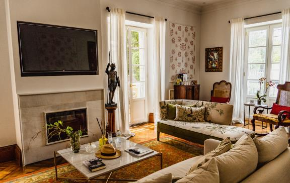
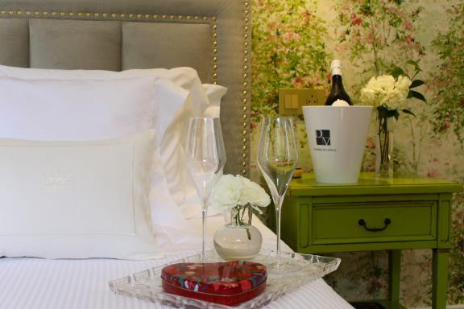

Featured Services

Spacious Rooms
We have spacious rooms (25 to 70 m²) for a comfortable stay at the hotel.

King and Queen Size Beds
In our hotel, the beds are comfortable, relaxing, and large for better rest and enjoyment.

Quality Cotton
The beds have 400-thread Egyptian cotton linens. Feel the contact and comfort on your skin.

Original Oak Floors
During the hotel's rehabilitation, the original floors and marquetry were recovered, a tribute to the construction era.

Original Furniture
We have exceptional pieces of restored and recovered furniture from the old palace.

43-inch TVs
All rooms have 43-inch TVs for you to enjoy on a large scale.

Romantic Getaway
Enjoy unique and unforgettable moments with your favorite person in a Boutique Hotel in the midst of nature.

Yoga in the Gardens
We offer outdoor yoga classes for a relaxing and luxurious getaway.